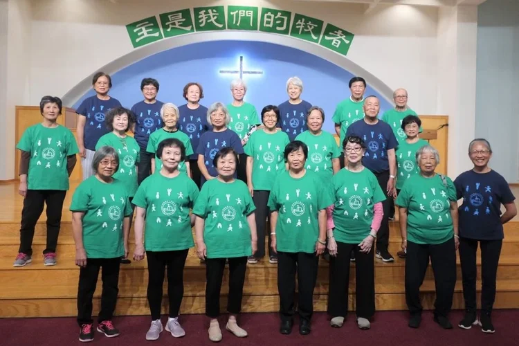

長者事工
Elders
尊重長者、守望同行
Honoring seniors, walking together
長者事工
Elders

無論您來自香港、中國大陸、台灣或東南亞，在我們以耶穌基督為主的大家庭中，您將找到身心靈的滋養，為每個人帶來喜樂與健康，滋潤您的屬靈生命。我們提供聖經研習與分享、主日學課程，以及強身健體的健美操和太極班，全年亦有多次集體外出活動，豐富您的生活。
Whether you come from Hong Kong, mainland China, Taiwan, or Southeast Asia, in our church, this big family with Jesus Christ as Lord, you will find nourishment for your body, mind, and spirit, bringing joy and health to everyone, and nourishing your spiritual life. We offer Bible study and sharing, Sunday school classes, and for physical fitness, we have aerobics and Tai Chi classes, as well as several group outings throughout the year to enrich your life.
我們誠摯邀請您加入充滿主愛的團契。請點擊下方連結，探索我們的長者事工。我們期待您的加入！也請留下您的聯絡資料，我們將盡快與您聯繫。
We cordially invite you to join our fellowship, filled with the Lord's love. Please click the link below to explore our ministry for seniors. We look forward to having you join us! Please also leave your contact information, and we will contact you as soon as possible.
更歡迎您親自來到我們的教會，我們期待與您相見！
You are even more welcome to come to our church; we look forward to seeing you!
有興趣參與或了解更多？
Interested in getting involved or learning more?
✉️ 聯絡我們 Contact Us ← 返回事工 Back to MinistriesJoin Us Online
無法親自出席？線上觀看直播或隨時收看錄影。
Can't make it in person? Watch our services live or access recordings anytime.